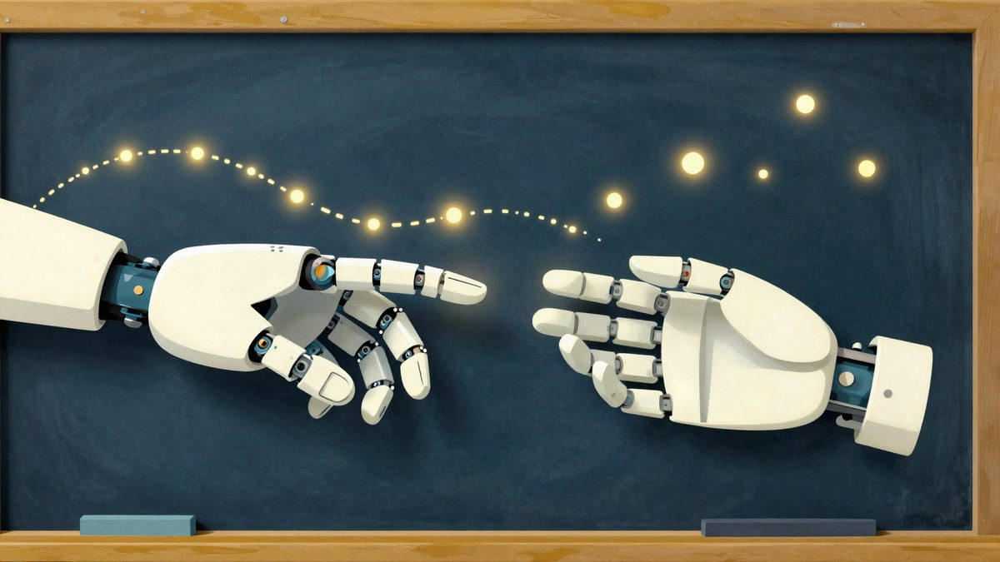

Matematičar Anthropica tvrdi da je uz Claudea dokazao Riemannovu hipotezu

Matematičar Levent Alpöge, povezan s Anthropicom i Harvardom, tvrdi da je uz pomoć Claudea pronašao dokaz Riemannove hipoteze, jednog od sedam Millennium problema. Objavio je milijune redaka koda u jeziku Lean, no formalni rad još nije objavljen, a neovisne potvrde nema.
Matematičar Levent Alpöge, povezan s Anthropicom i Sveučilištem Harvard, tvrdi da je uz pomoć Claudea otkrio dokaz Riemannove hipoteze. To je jedan od sedam Millennium problema i vjerojatno najpoznatiji neriješeni problem u matematici. Tvrdnju je iznio u javnoj izjavi, a neovisne potvrde za sada nema.
Riemannovu hipotezu postavio je njemački matematičar Bernhard Riemann 1859. godine. Ona kaže da iza naizgled nasumičnog rasporeda prostih brojeva na brojevnom pravcu stoji određeni poredak. Hipoteza je središnja za teoriju brojeva, a mnogi je smatraju najvažnijim otvorenim pitanjem u matematici.
"Vjerujem da sam, radeći s Claudeom, otkrio dokaz Riemannove hipoteze", napisao je Alpöge. Problem opisuje kao klasik teorije brojeva koji traži optimalnu kontrolu nad brojem prostih brojeva zadane veličine.
Što je objavljeno, a što nije
Uz izjavu je Alpöge podijelio milijune redaka koda u programskom jeziku Lean, za koji tvrdi da potvrđuje njegove rezultate. Lean je jezik za formalnu provjeru matematičkih dokaza. Formalni rad još nije objavio, a kao razlog navodi da dokaz nastao s Claudeom zauzima više od 250.000 stranica.
Dok ga stručnjaci neovisno ne provjere, ne zna se drži li dokaz. Ako ga drugi matematičari potvrde, to bi bio jedan od najvećih proboja u povijesti te discipline.
Kontekst
OpenAI je prošli rujan objavio da im je napredni model pomogao riješiti problem Navier-Stokes. Ta je tvrdnja izazvala polemiku oko toga kome pripada zasluga.
Matematičari na sve veću ulogu umjetne inteligencije u svojoj struci reagiraju mješavinom uzbuđenja, znatiželje i tuge. Alpöge je to izravno spomenuo. Priznao je da je prirodno osjećati da ovo znači kraj, a u njegovu slučaju i gubitak glavnog vodiča u radu. No ono što je vidio tijekom rada, kaže, toliko ga je zadivilo da vjeruje kako je riječ o početku nečeg znatno većeg u znanosti.
Za sada su jedini javni materijal Alpögeova izjava i Lean kod koji je objavio.
Izvor: Futurism
Povezani članci
- COO: besplatna igra u pregledniku u kojoj ste robotski golub u 3D Torontu od 630 km²10. studenoga 2026.
 Izraelska vojska je prenijela 3,5 milijuna fotografija Palestinaca na Amazonov Rekognition, tvrdi Guardian16. studenoga 2026.
Izraelska vojska je prenijela 3,5 milijuna fotografija Palestinaca na Amazonov Rekognition, tvrdi Guardian16. studenoga 2026.- Tutor španjolskog sumnja da mu je učenik kloniranjem glasa u ElevenLabsu napravio naratora za YouTube kanal7. studenoga 2026.